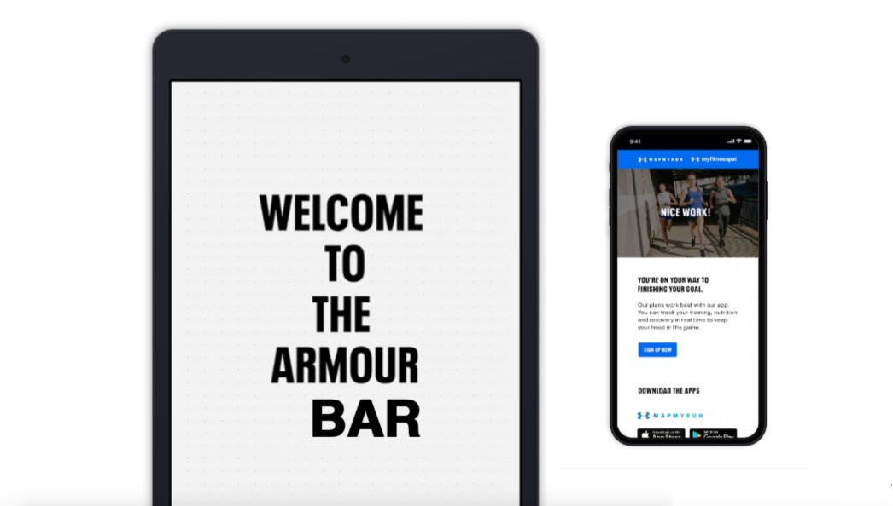
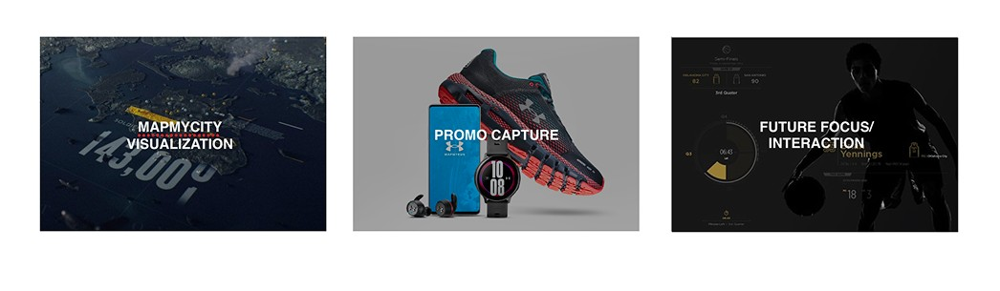
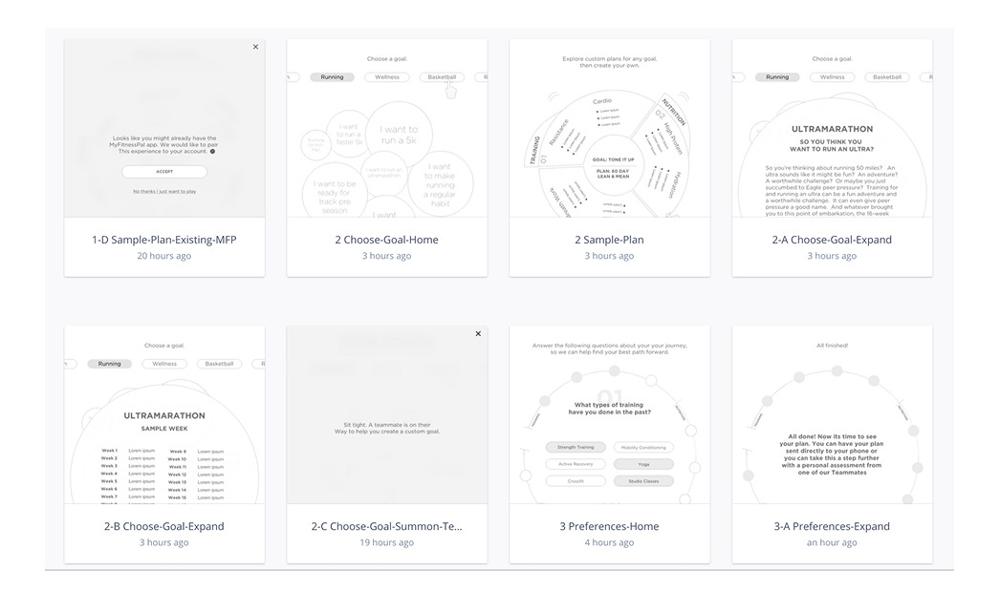
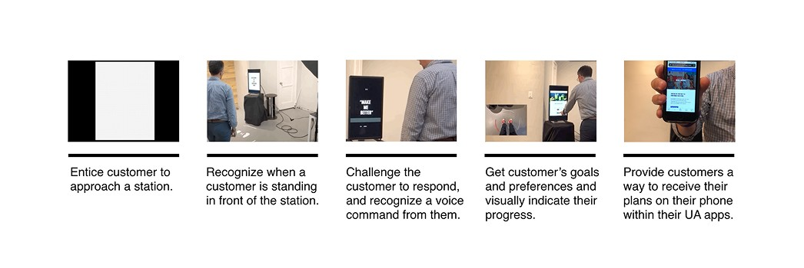
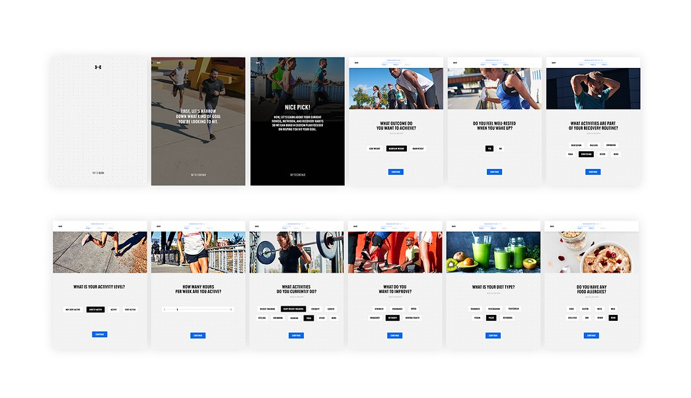
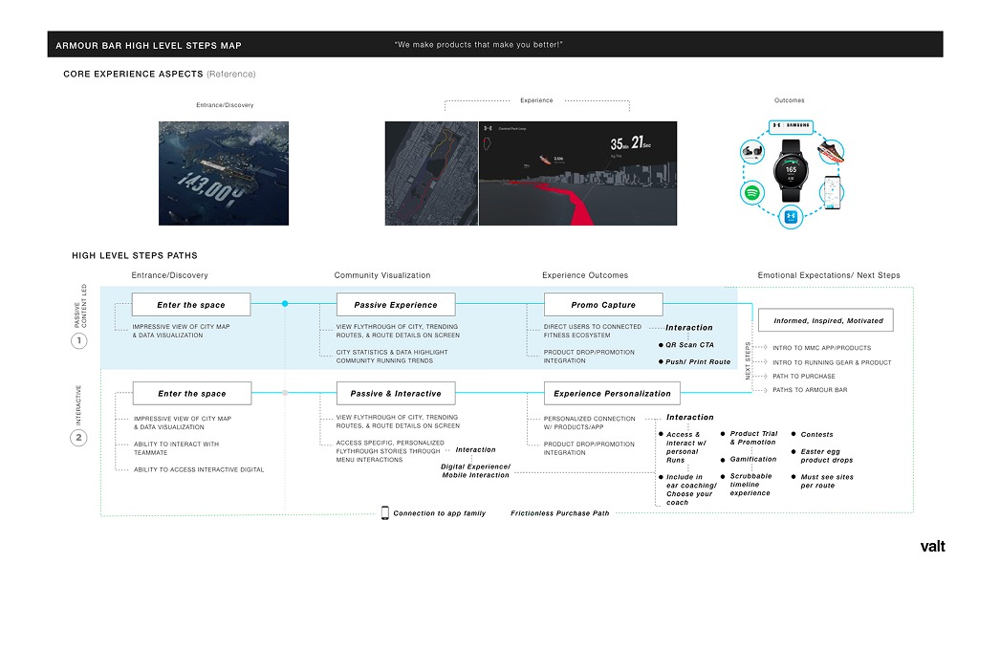

Under Armour · Future retail
What could
a store do for
an athlete?
Not a better shop. A Human Performance Center — where performance data, elite training expertise and physical space combine to make someone measurably better.
Armour Bar

Map My City

Pilot one · Armour Bar
Human optimization, not another dashboard.
Data is only valuable when it helps someone make a better decision. Elite training expertise became the layer that turned readings into advice.

01 · Strategy
An experience built to bring athletes to elite status
Under Armour already had athletes, trainers, performance data and connected fitness. The opportunity was to combine them.


Pilot two · Map My Run
Turn the world’s cities into your running course.
Routes built around distance, ability, goals, landmarks and what other runners are doing — starting in Baltimore, the home of Under Armour.

Impact
Retail doesn’t have to begin and end with a transaction. The relationship can continue long after someone walks out the door.

Next project
Bose —
an iconic audio brand, in-store.